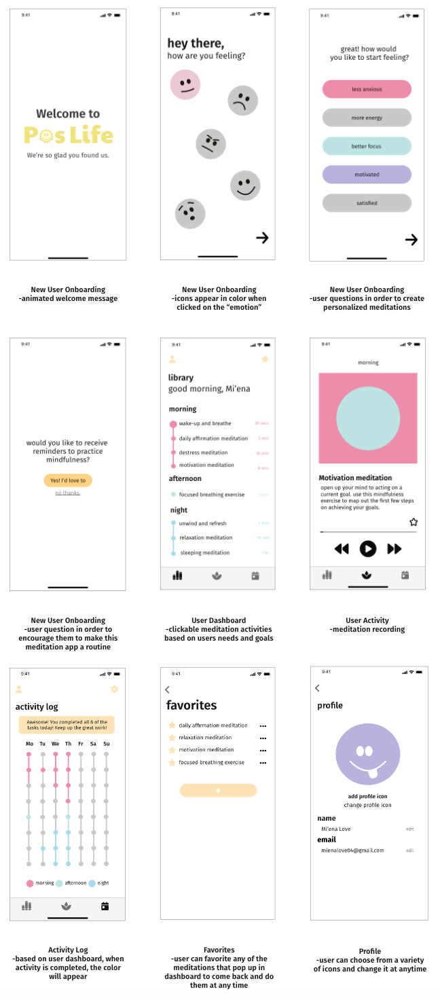

Summary
PosLife is a meditation app that creates a personalized dashboard based on how the user is feeling. Each week the user will be presented with 8 activities and the app will automatically log when the user has completed them.
Problem
Many people forget to take some time for themselves and just breathe. Negative thoughts can be very overbearing and stressful in people's lives.
Solution
The app will send notifications to try some of the personalized meditations. The user can log their activities, discover their favorite meditations and star the ones they'd wish to come back to.
Target User
The target user is a young adult who would like to have a more positive mindset and struggles with making the time to work on mental health.
Process
Research
Some apps that I researched include Headspace and Lumosity. Each of those apps inspired the onboarding and dashboard design of PosLife. I also researched these apps to mkae sure I had the right tone of voice, typography, and color scheme for a mental health app.
User Interviews
In my user interview I asked my classmate which part of her well being she would like to work on the most. She answered, " I believe working on my mental health would be most important". I then asked what activity she felt was most important for her to improve her mental health. From there she told me poritive thinking would be the best way to improve her well being which led us to decide on meditation exercises.
Low Fidelity Wireframes and User Flow
Visual Design
Prototype
At the top of the user dashboard displays access to the profile and favorites. Further down, the user can then click on "Motivation Meditation" where the user will begin their first activity.
After reading the description, the user will click the play button on the meditation and enjoy a relaxing experience that will reset their mind.
The user will come to the activity log to become proud of all the time they have been taking to work on themselves. They can click on each meditation that has been filled in to save it.
To see the XD prototype click here:
Conclusion
Challenges
Something that was very difficult about this project was keeping it all very minimal. I had so many ideas and activities I wanted to include in order to make it a well rounded mental healh app but had to narrow it down to a specific activity.
Successes
Poslife is very well branded and aspect about the style of the app is very fitting. It is very simple but clean and organized which is important for when the user is coming to this app to calm down and destress.